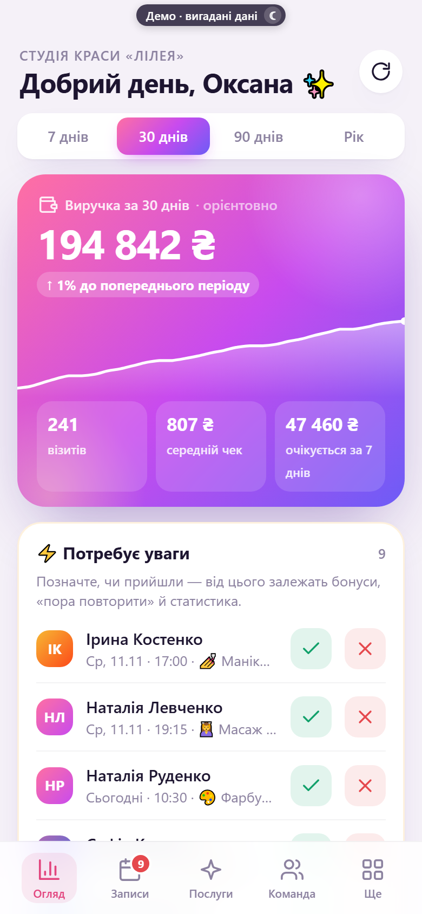
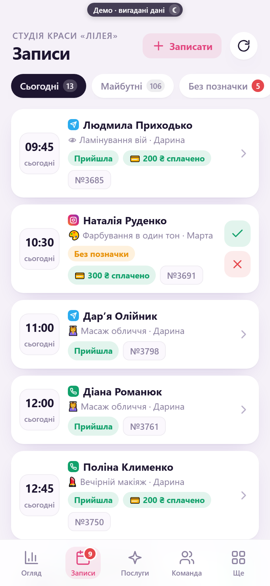

Bot 1 of 4 · Beauty salon
Salon Booking Bot
ShippedMini AppInstagram
What it does. Clients book a service, a master and a free slot from their phone. The bot reminds them the evening before, asks for a review after the visit and sends staff a card to take.
Who uses it. Clients, salon staff and the owner, who has a Mini App panel.
9,455lines of Python
1owner Mini App
2 hreminder before a visit

